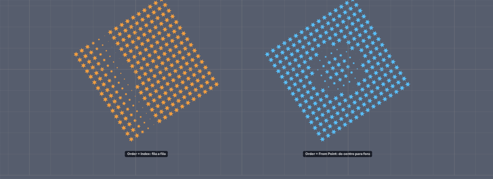
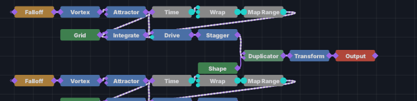

Até aqui, quando muitas peças se mexiam, mexiam-se todas ao mesmo tempo, ou numa fila da primeira à última. Os programas de animação de vídeo (GSAP, anime.js) têm uma ferramenta que faz falta numa cena com centenas de peças: a cascata. Cada peça começa um pouco depois da outra, e o artista escolhe de onde a onda parte e com que ritmo ela corre.
Dois cartões fazem isso, e os dois respondem às mesmas duas perguntas:
| cartão | o que ele espalha pela onda |
|---|---|
Time | um atraso (Delay): as peças longe da origem
começam mais tarde. É a cascata do GSAP. |
Stagger | um valor (posição, rotação ou tamanho): as peças longe da origem recebem mais. |
Order diz por onde
a onda corre (fila a fila, do centro, ao acaso, numa grelha, ou a partir de um ponto do mundo);
Ease diz com que ritmo — e mostra-o como um GRÁFICO, como a timeline.
As curvas são as MESMAS da timeline: uma chave Back Out e uma onda Back
Out desenham a mesma curva.Cole isto inteiro num terminal. Na primeira vez ele compila (alguns minutos); depois abre em segundos.

Order de cada uma.No grafo (em baixo) há duas filas de cartões, uma por galáxia — a de cima é a laranja.
Elas são iguais menos um botão: o Order dos cartões Time e
Stagger.

Falloff → Vortex → Attractor → Integrate),
a onda no tempo (Time → Wrap → Map Range → Drive, o tamanho) e a onda no valor
(Stagger, a rotação), vestida por Shape → Duplicator.Time. Na linha Order,
escolha From Point.
Origin X, Origin Y e
Reach. A laranja passa a encolher em anéis, como a azul.Origin X para a direita.
Reach é a distância até onde ela chega no fim do atraso — diminua-o e as
estrelas de fora acordam todas juntas no fim.Order para Grid.
Columns, From e Axis. A
onda passa a ser medida em células da grelha de partida (como no GSAP). Com
Axis = X ela corre só na horizontal, em colunas.Ainda no cartão Time da laranja, a linha Ease mostra o gráfico
da curva com que o atraso se espalha — o mesmo desenho do gráfico da timeline. Clique no
gráfico: abre uma janela com as quinze curvas desenhadas, as três direções e, em baixo, a
curva escolhida em grande.
Steps.
Elastic.
Spring e arraste a bolinha do pico para cima e para
baixo.
Bezier e arraste as duas alças.
ease dos browsers.In · Out ·
In-Out).
Delay = 0 o cartão
Time é o relógio de sempre, e as linhas da onda (Order,
Ease…) somem do cartão — não fazem nada até haver um atraso para espalhar.| linha / gesto | cartão | o que faz |
|---|---|---|
Delay | Time | o atraso da ÚLTIMA peça da onda (0 – 10 s); as outras esperam uma parte dele |
Order | os dois | Index · From Center · Random · Grid · From Point |
Ease (o gráfico) | os dois | clique: as 15 curvas, as 3 direções e a curva em grande |
a bolinha do Back / Spring | no gráfico | para cima e para baixo: quanto a curva passa do fim |
a bolinha do Elastic / Steps | no gráfico | para os lados: o lugar do tremor / a largura dos degraus |
as alças do Bezier | no gráfico | a forma da curva, como na timeline |
Columns · From · Cell | os dois | a
grelha do Grid e a célula de onde parte |
Axis | os dois | a distância conta nos dois eixos, só em X, ou só em Y |
Origin X/Y · Reach | os dois | o ponto do
From Point e onde a onda chega ao fim (metros) |
Time da laranja, Order = Random: cada
estrela pisca no seu momento. Mude Seed para sortear outra ordem.Delay para perto de
3,5: a última estrela acorda pouco antes de a onda seguinte começar, e a galáxia
nunca fica parada.Stagger da azul, mude Channel
para Size e Max para 1: por baixo dos anéis do Time, as estrelas de fora ficam
maiores que as do centro — o mesmo Order a espalhar um VALOR em vez de um
atraso.32 761 estrelas, na placa de vídeo (o caminho de sempre) e na CPU (o de reserva), medidos lado a lado (ms por quadro; um quadro a 60 fps tem 16,7 ms):
| caso | placa | CPU |
|---|---|---|
| sem onda (a base) | 0,10 | 0,10 |
| Stagger, curvas antigas (Linear · Quad · Bounce) | 0,12 | 0,36 – 0,39 |
| Stagger, Sine · Expo · Elastic · Steps | 0,12 | 0,38 – 0,52 |
| Stagger, Spring | 0,12 | 0,89 |
| Stagger, Bezier | 0,15 | 5,14 |
| Stagger, Grid · From Point | 0,12 | 0,61 · 0,38 |
| Time com Delay (Index · From Point + Spring) | 0,13 · 0,12 | 0,37 · 0,43 |
Na placa as curvas novas custam o mesmo que as antigas. Na CPU o Bezier
é o caro (procura a curva 24 vezes por estrela). E nesta cena o Stagger corre no
processador: o Duplicator que carimba as estrelas, com o Point Scale ligado,
ainda não tem caminho na placa, e leva consigo tudo o que vem antes dele.
| o que você vê | o que reportar |
|---|---|
| nenhuma estrela encolhe | «a onda do Time não aparece» + foto |
| a azul corre fila a fila | «o From Point não lê a posição» |
mudar Ease não muda o ritmo | qual curva, e em qual cartão |
| uma linha que aparece no cartão e não faz nada | o nome da linha e o
Ease/Order escolhido |